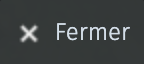

Cette carte a pour but d’aider les nouveaux habitants de Villefranche-de-Lauragais a trouver des informations qui ne se trouvent pas sur Google Maps. Ce sont ceux qui connaissent le mieux Villefranche qui contribuent : les habitants !
> Je participe !
X
Avant de contribuer à la carte, quelques informations : le but est d'ajouter des points et/ou des tracés de choses que l'on ne peux pas trouver sur internet. Par exemple, il est facile de savoir où sont les boulangeries, mais seul un habitant de Villefranche sait où trouver la meilleur chocolatine... Ajoutez donc seulement des choses que vous seul pouvait savoir !
Aide à la contribution
En appuyant sur le bouton "Go !" vous ouvrirez une nouvelle page qui permettra d'éditer la carte.
En haut à droite, cliquez sur un bouton carré avec un crayon qui permet d'activer le mode édition.
Cliquez sur ce bouton puis cliquer à l'endroit où vous souhaitez le mettre sur la carte.
Sélectionnez le calque de l'élément "Marqueurs".
Donnez-lui un nom (obligatoire) et une description (optionnel).
Vous pouvez changer l'image à l'interieur de la goutte en cliquant sur "Propriété de la forme" et image de l'icône > "définir"
Puis cliquez sur "fermer".
Cliquez sur ce bouton puis cliquer à l'endroit où vous souhaitez mettre le premier point.
Dessinez votre tracés de points en points.
Lorsqu'il est fini cliquez sur le dernier point que vous avez mis.
Séléctionnez le calque "Tracés".
Donnez-lui un nom (obligatoire) et une description (optionnel).
Puis cliquez sur "fermer".
Cliquez sur ce bouton.
Cliquer une fois sur l'élément à modifier puis :
Pour modifier le nom ou la description.
Pour supprimer.